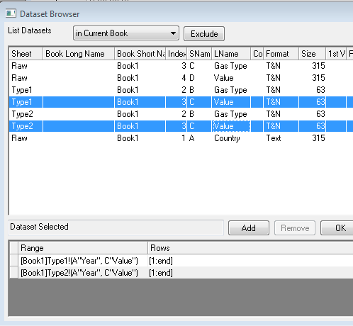

Diagramme dynamisch durch Ändern der Datenfilter vergleichen
Dynamic-Graphs-Changing-Filters
Zusammenfassung
Mit der Funktion Spalten kopieren in... können Sie Spalten aus einem Arbeitsblatt in ein neues Arbeitsblatt kopieren, während die beiden Blätter miteinander verknüpft bleiben. Mit Hilfe dieser Funktion können Sie mehrere Filterbedingungen für eine Spalte festlegen, indem Sie eine entsprechende Anzahl von Arbeitsblättern erstellen. Um zum Beispiel zwei Filterbedingungen für die Spalte Gas Type einzurichten, wurden zwei Blätter mit den Namen Type1 und Type2 erstellt, die mit dem Arbeitsblatt Raw verknüpft sind.
Außerdem wurden einige Funktionen verwendet, mit denen ein dynamisches Diagramm erstellt wurde, das Änderungen an den Filterbedingungen in Echtzeit widerspiegelt. In folgendem Video-Tutorial werden diese Konzepte ausführlicher erklärt: https://www.youtube.com/watch?v=N0Pud-91qCM
Origin-Version mind. erforderlich: Origin 2015 SR0
Was Sie lernen werden
Dieses Tutorial zeigt Ihnen, wie Sie:
- Daten dynamisch mit unterschiedlichen Filterbedingungen vergleichen,
- mehrere Filterbedingungen für die gleichen Spalten unter Verwendung verschiedener Arbeitsblätter hinzufügen,
- eine dynamische Filterbeschriftung in ein Diagramm einfügen, das sich entsprechend den Änderungen an den Filterbedingungen aktualisiert.
Schritte
Dieses Tutorial basiert auf der Datei Tutorial Data.opj im Verzeichnis <Origin-Verzeichnis>\Samples\.
Arbeitsblätter einrichten
Öffnen Sie die Datei Tutorial Data.opj, navigieren Sie zu dem Ordner Compare Graphs with Filters Data und aktivieren Sie die Arbeitsmappe Book1. Das Arbeitsblatt Raw enthält Daten für die Emission der verschiedenen Treibhausgase in verschiedenen Ländern über einen Zeitraum von Jahren.
- Markieren Sie die letzten drei Spalten�: Year, Gas Type, Value.
- Klicken Sie mit der rechten Maustaste auf eine der Spalten und wählen Sie im Kontextmenü Spalten kopieren in....
- Setzen Sie in dem aufgerufenen Dialog Spalten kopieren in: colcopy den Modus für Neu berechnen auf Auto, so dass das Ergebnis später bei Änderung der Eingabedaten automatisch aktualisiert wird. Stellen Sie außerdem sicher, dass die Zielspalte(n) auf <neu!<neu> gesetzt ist, d. h., ein neues Arbeitsblatt wird hinzugefügt, und klicken Sie auf OK
-
- Nennen Sie das neue Arbeitsblatt Type1.
- Wiederholen Sie die obenstehenden Schritte und nennen Sie das zweite Arbeitsblatt Type2.
-
Filter festlegen
- Markieren Sie in Blatt Raw die Spalte Country und klicken Sie auf die Filterschaltfläche.
-
- Ein Trichtersymbol wird oben links von der Spalte Country erstellt. Klicken Sie auf das Symbol, deaktivieren Sie in dem aufgerufenen Menü das Kontrollkästchen Alle auswählen und aktivieren Sie das Kontrollkästchen France. Klicken Sie auf OK.
-
- Das Arbeitsblatt zeigt nur noch die Informationen für das Land Frankreich (France).
- Richten Sie in Blatt Type1 einen Filter für die Spalte Gas Type und das Gas HFC ein. Da Blatt Raw und Blatt Type1 miteinander verknüpft sind, zeigt dieses Arbeitsblatt nun nur die HFC-Emissionswerte für das Land Frankreich.
-
- Richten Sie in Blatt Type2 einen Filter für den Gas Type PFC ein. Dieses Arbeitsblatt zeigt nur noch die PFC-Emissionswerte für das Land Frankreich.
Diagramm erstellen und lineare Anpassung hinzufügen
- Wählen Sie bei vollkommen unmarkierten Arbeitsblättern im Menü Zeichnen > Mehrere Felder/Achsen: Gestapelt....
- Klicken Sie in dem aufgerufenen Dialog auf die Pfeilschaltfläche neben dem Feld Eingabe und wählen Sie Spalten wählen...
-
- Stellen Sie im Dialog Datenbrowser sicher, dass unter Liste Datensätze die Option in aktueller Mappe festgelegt ist. und markieren Sie beide Wertespalten in den Blättern Type1 und Type2. Klicken Sie auf Hinzufügen und dann auf OK.
-

- Setzen Sie im Dialog Stapeln: plotstack den Diagrammtyp auf Punkt und klicken Sie auf OK. Das folgende Diagramm wird erstellt:
-
- Klicken Sie in dem neu erstellten Diagramm doppelt auf eine der Achsen und setzen Sie auf der Registerkarte Skalierung den Modus für Neu skalieren auf Auto. Tun Sie dies für jede Achse auf beiden Zeichnungen dieses Diagramm. Folglich werden die Achsen automatisch neu skaliert, wenn der Arbeitsblattfilter geändert wird und die Diagrammdaten sich ändern.
-
Hinweis: Durch Halten der Strg-Taste und Auswählen der Symbole Horizontal und Vertikal können Sie die Neuskalierung für X- und Y-Achsen im gleichen Layer gleichzeitig ändern. Verwenden Sie die Auswahlliste Layer unten im Dialog, um die Änderungen auf beide Diagrammlayer (d. h. Layer 1 und Layer 2) anzuwenden.
- Setzen Sie die Auswahlliste Layer auf Layer 1 und klicken Sie dann auf die Registerkarte Beschriftung der Hilfsstriche. Ändern Sie bei ausgewähltem Symbol Unten die Anzeige, um nur das Jahr zu zeigen.
- Wechseln Sie zur Registerkarte Linie und Hilfsstriche. Setzen Sie bei ausgewähltem Symbol Rechts die großen und kleinen Hilfsstriche auf Keine und wenden Sie die Einstellung an.
- Setzen Sie die Auswahlliste Layer auf Layer 2 und wiederholen Sie dies für die obere X-Achse und die rechte Y-Achse in Layer 2. Klicken Sie auf OK.
- Löschen Sie die zwei Titelobjekte der Y-Achse im linken Bereich des Diagramms, fügen Sie eine neue Textbeschriftung Wert hinzu und drehen Sie sie um 90 Grad (klicken Sie mit der rechten Maustaste und wählen Sie Einstellungen, um den Drehwinkel zu ändern) und verwenden Sie sie als neuen Y-Achsentitel.
- Als Nächstes soll eine lineare Anpassung hinzugefügt werden, um die Emissionstrends offensichtlicher zu machen.
- Aktivieren Sie das Diagramm und wählen Sie Analyse: Anpassen: Linearer Fit....
- Setzen Sie Neu Berechnen auf Auto.
- Verwenden Sie die Pfeilschaltfläche neben dem Feld Eingabe und wählen Sie Alle Zeichnungen in aktiver Seite hinzufügen. Klicken Sie auf OK, um den Dialog zu schließen und die lineare Regression für die zwei Zeichnungen durchzuführen.
-
- Klicken Sie doppelt auf die linearen Anpassungskurven. Gehen Sie im aufgerufenen Dialog Details Zeichnung zur Registerkarte Linie und setzen Sie die Farbe für jede Kurve auf Rot. Löschen Sie die zwei Legendenobjekte und verschieben Sie die Berichtstabelle. Das Diagramm sollte am Ende folgendermaßen aussehen:
-
Sich dynamisch ändernde Beschriftungen hinzufügen
- Klicken Sie auf das Blatt Type1 und markieren Sie die Beschriftungszeilenzelle Filter in Spalte B.
- Wählen Sie Bearbeiten: Kopieren: Kopieren.
- Wählen Sie das Hilfsmittel Text
 und klicken Sie auf das obere Bedienfeld des Diagramms. Wenn das blaue Textfeld angezeigt wird, halten Sie Strg + Alt + V gedrückt. Die Datenfilterbeschriftung wird als Link in das Textfeld eingefügt.
und klicken Sie auf das obere Bedienfeld des Diagramms. Wenn das blaue Textfeld angezeigt wird, halten Sie Strg + Alt + V gedrückt. Die Datenfilterbeschriftung wird als Link in das Textfeld eingefügt.
- Klicken Sie auf die neue Textbeschriftung, klicken Sie dann auf die rechte Maustaste und wählen Sie dann Eigenschaften.
-
- Aktivieren Sie im Dialog die Registerkarte Programmierung und das Kontrollkästchen Echtzeit, so dass sich die Beschriftung bei jeder Änderung des Datenfilters ebenfalls ändert.
- Tun Sie dies mit den Filterbeschriftungen in Blatt Type2 und Blatt Raw. Fügen Sie die Wörter "Gas Type" vor den Beschriftungen "PFC" und "HFC" sowie "Country" vor der Beschriftung des Länderdatenfilter ein. Fügen Sie auch einen Layertitel hinzu:
-
Frei bewegliches Diagramm zu Arbeitsblatt hinzufügen
- Um das Diagramm in das Arbeitsblatt einzufügen, aktivieren Sie das Arbeitsblatt Raw.
- Klicken Sie mit der rechten Maustaste auf den grauen Bereich des Arbeitsblatts und wählen Sie im Kontextmenü Diagramm hinzufügen.
-

- Wählen Sie in dem aufgerufenen Diagrammbrowser das Diagramm, das Sie soeben erstellt haben, und klicken Sie auf OK
- Vergrößern Sie das Diagramm, indem Sie es markieren und an den Rändern ziehen. Wenn Sie die Filtertypen jetzt in dem Arbeitsblatt ändern, wird das Diagramm entsprechend aktualisiert.